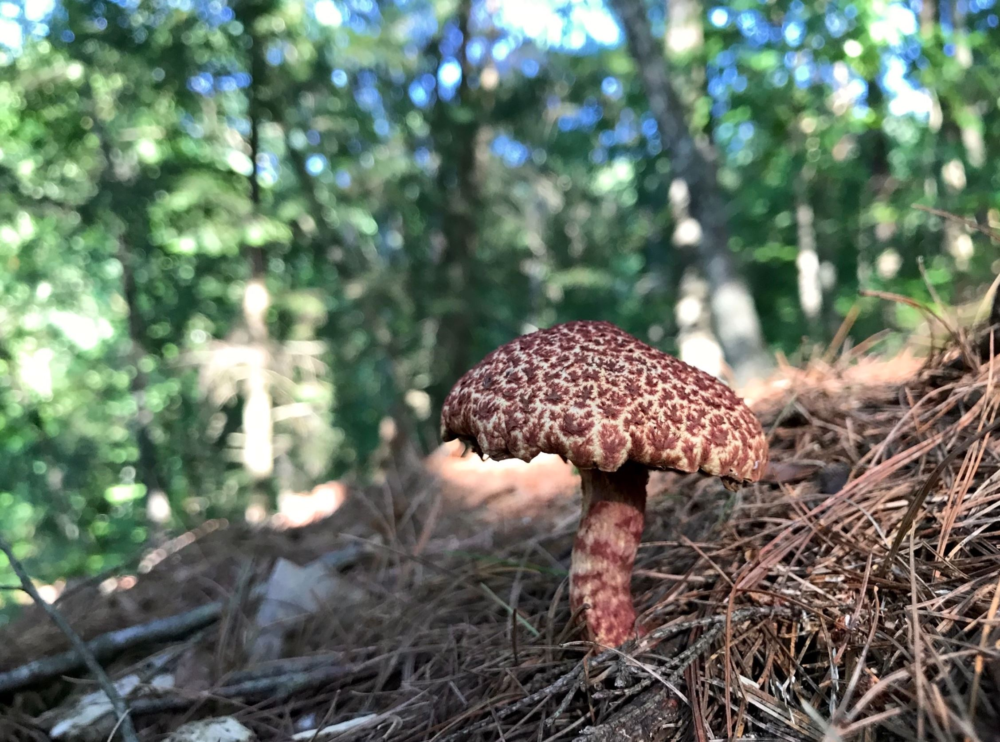
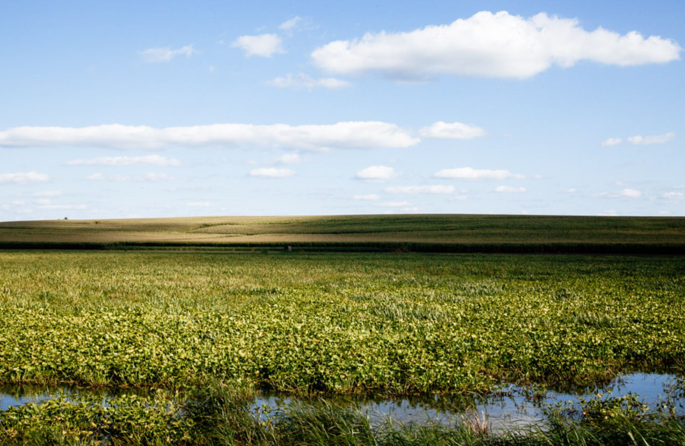

I am passionate about flora and fauna and love to get out and hike!
Mushroom hunting
I love to search for cool fungi...here are a few favorites!
- Lion's Mane
- Reishi
- Chanterelle
- Artists' Conk
- Hen of the Woods

Painted suilus mushroom
Photo: Adam Blackbourn
Favorite local parks
The following parks are all in Madison or Middleton:
- UW Arboretum
- Pheasant Branch Park
- Cherokee Marsh
- Owen Conservatory
- Lakeshore Nature Preserve

A marsh near Madison, Wisconsin
Photo: Adam Blackbourn